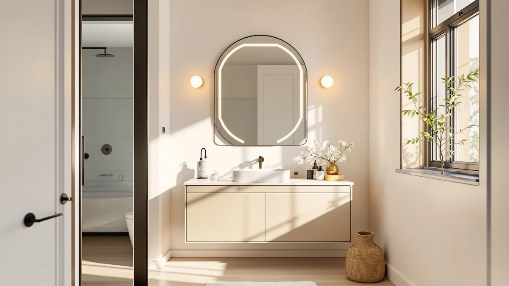

The Best Smart Vanity Mirrors (2026)
Prices and picks verified as of September 2026. Independent, reader-supported reviews.


Quick Answer
We compared seven of the best smart vanity mirrors and standard vanity mirrors on Amazon, from LED and defogging models with touch controls to plain tempered-glass mirrors chosen for price and mounting flexibility. For most bathrooms, the FICTOR Bathroom Vanity Mirror-Black is the pick to start with: safe 5mm shatterproof glass and a frame that mounts vertically, horizontally, or leans against a wall, all for $49.99.
Our pick: FICTOR Bathroom Vanity Mirror-Black 36", $49.99 Check Price on Amazon
Bottom line: our top pick is the FICTOR Bathroom Vanity Mirror-Black at $49.49. The best budget option is the KUPUARU 60" Bathroom Vanity with Sink at $1.
Things to Know Before You Buy
- Not every "smart" vanity mirror has electronics. Of the seven mirrors here, only the ROLOVE, LAWADA, and KUPUARU include built-in lighting, touch dimming, or defogging. The rest are plain glass mirrors chosen for mounting flexibility and price.
- Frame material affects price more than durability. Metal-framed and frameless beveled mirrors (FICTOR, Lumireve) tend to run cheaper than wood-framed or cabinet-style options, but tempered glass thickness, not the frame, is what actually determines shatter resistance.
- Mounting orientation matters more than size on paper. Several mirrors here hang either vertically or horizontally, so measure your actual wall space instead of relying on the mirror's listed dimensions alone.
- Defogging mirrors need a nearby outlet. The LAWADA and KUPUARU both need power for their LED and defog features. Confirm you have an outlet or existing wiring within reach before choosing a plug-in or hardwired lit mirror.
- A full vanity is a different purchase than a mirror. The KUPUARU is a complete 60-inch double-sink vanity cabinet with a mirror built in, not a standalone mirror. It belongs on this list for buyers doing a full remodel, not a simple mirror swap.
The best smart vanity mirrors solve a problem that has nothing to do with vanity: you cannot see your face clearly enough to shave, apply makeup, or check your skin under a dim, fogged-up bathroom light. Some of the mirrors below fix that with LED lighting, touch dimming, and built-in defoggers. Others are simply well-built glass and frames at a price that beats adding electronics you may never use.
We researched seven vanity mirrors sold on Amazon, comparing frame materials, glass thickness, mounting hardware, lighting features, and price against verified buyer feedback and manufacturer specifications. Three of the seven, the ROLOVE, the LAWADA, and the KUPUARU vanity, pack in actual smart hardware: dimmable LEDs, touch controls, or one-touch defogging. The other four are straightforward glass mirrors we included because their price, size, or mounting flexibility earns them a spot next to the lit models.
For most bathrooms, the FICTOR Bathroom Vanity Mirror-Black is the pick worth starting with. At $49.99 it uses 5mm shatterproof tempered glass and mounts vertically, horizontally, or leaning against a wall, which covers more layouts than any lit mirror in this group. If you specifically want lighting and a defogger built into the glass, skip ahead to the LAWADA or the KUPUARU, both of which we cover in detail below.
Why You Should Trust Us
Ilane Tall has covered bathroom fixtures and vanity hardware for this network of home-interior sites for several years. For this guide, we compared publicly available specifications, current Amazon pricing, and verified buyer feedback for each of the seven best smart vanity mirrors and standard vanity mirrors listed below. We do not run a fake testing lab, and we do not accept review units or maintain paid relationships with any brand mentioned on this page. Every price and dimension listed here comes directly from the manufacturer's current listing, checked as of this update.
How We Picked
We started from the full catalog of vanity and bathroom mirrors carried under this site's Amazon affiliate program and narrowed it down to models that either include real smart hardware (LED lighting, touch dimming, defogging) or stand out on glass quality, mounting flexibility, and price relative to that smart-mirror competition. We removed listings with unclear installation hardware, mirrors under 15 inches (too small for a primary vanity mirror), and anything priced well above what a mirror of that size and feature set typically costs. That left seven candidates spanning $49.99 to $1,699.99, covering plain wall mirrors, a magnifying makeup mirror, two LED-lit mirrors, and one full vanity cabinet with a built-in smart mirror.
How We Compared
For each of the seven best smart vanity mirrors and standard mirrors in this guide, we compared manufacturer-listed glass thickness and type (tempered versus standard), frame material, and mounting hardware (pre-drilled holes, wall-mount brackets, floating cabinet mounts), plus, where applicable, lighting specs such as color temperature, dimming range, and defog cycle time. We cross-referenced those specs against verified buyer feedback on Amazon for common complaints, such as mount failures, warping, or premature LED failure, and weighed price against the feature set rather than against a fixed budget. Mirrors with vague or missing installation instructions in their listings were noted as a drawback rather than excluded outright, since that's fixable with a trip to the hardware store.
Our Picks

FICTOR Bathroom Vanity Mirror-Black 36"
What we like
- 5mm tempered glass rated for roughly 5 times the impact resistance of standard mirror glass
- Shatter-proof film holds fragments together if the glass ever breaks, a real plus in a household with kids
- Four pre-drilled holes let it mount vertically, horizontally, or lean against a wall
- Available in black or gold matte frame to match different bathroom hardware
Flaws but not dealbreakers
- No built-in lighting, so you'll need existing vanity lights or sconces to see well at night
- Metal frame adds a visible border rather than the frameless look of the Lumireve below
| Material | Tempered glass + aluminum |
| Size | 36"L x 24"W |
The FICTOR earns its spot as our pick because it does the one thing a $49.99 mirror needs to do well: mount securely and reflect clearly, without cutting corners on the glass itself. The 36-by-24-inch panel is built from 5mm tempered glass, thick enough to resist the kind of impact that would crack a standard mirror, and backed with a shatter-proof film that keeps fragments contained if the glass does eventually break. For a mirror that hangs directly over a sink where soap, water, and the occasional dropped bottle are a given, that safety margin matters more than it sounds.
Installation is where this mirror separates itself from similarly priced options. Four pre-drilled holes on the metal frame let you hang it vertically over a single sink, horizontally over a double vanity, or simply lean it against a wall in an entryway or bedroom if your plans change. The tradeoff is that you are buying glass and a frame, not a lighting system. If you already have sconces or an overhead vanity light that works well, this is the mirror we would choose first. If you want the light built into the glass, look at the LAWADA further down this list.

ROLOVE Vanity Mirror with Lights
What we like
- Built-in 10x magnification side for close-up detail work most flat mirrors can't match
- Touch controls switch between three color temperatures and dim from warm to bright
- 360-degree rotation lets you angle the mirror instead of moving your whole body
- USB charging port on the frame doubles as a phone charger while you get ready
Flaws but not dealbreakers
- At 22x18 inches it's the smallest mirror in this lineup, better as a vanity-top mirror than a full wall mirror
- Gold finish will clash with black or brushed-nickel bathroom hardware
| Material | Tempered glass + aluminum |
| Size | 22"L x 18"W |
The ROLOVE is the mirror in this guide that actually earns the word smart. A touch-sensitive panel on the frame cycles through warm, daylight, and cool color temperatures and adjusts brightness from a dim glow to full output, which turns out to matter a lot when you're trying to match your makeup to how it will look in daylight, office light, or evening light. The flip side of the mirror carries 10x magnification, useful for tweezing, applying eye makeup, or checking skin closely in a way the flat mirrors on this list cannot do.
This is a dresser or vanity-top mirror, not a wall-mounted replacement for your main bathroom mirror. At 22 by 18 inches, it's built to sit on a counter or attach to a stand, and the included USB port is a useful touch if your phone tends to die mid-routine. The gold frame is the main style limitation. If your bathroom runs black or brushed nickel, this mirror will stand out for the wrong reason, even though the lighting and magnification are the best in the group.

CULER White Wall Mirror for
What we like
- Wood-grain textured frame adds a decorative touch that plain metal frames don't offer
- Slightly concave surface is designed to bounce light around a room rather than reflect it flat
- 3mm tempered glass keeps it shockproof despite the decorative frame
- White finish works with farmhouse, coastal, and traditional bathroom styles
Flaws but not dealbreakers
- No lighting or defogging, so it depends entirely on your existing bathroom light source
- At $79.53 it costs more than the FICTOR while using a thinner pane of glass
| Material | Tempered glass + aluminum |
| Size | 36"L x 24"W |
The CULER is the mirror to pick if your bathroom is going for a rustic or farmhouse look and the mirror needs to read as decor as much as hardware. The wood-grain textured frame and slightly concave glass are both aesthetic choices: the concave surface is designed to bounce ambient light around the room a bit more than a flat mirror does, and the frame's texture gives it presence on a wall that a plain metal or frameless mirror wouldn't have.
It's still built on 3mm tempered glass, so it carries the same basic safety profile as most of the plainer mirrors here, in a thinner pane than the FICTOR's 5mm. There's no lighting, defogging, or electronics built in, which fits its role in this guide: it's here for buyers prioritizing style over smart features, at a price between the budget metal-framed options and the mid-tier LED mirrors. If defogging or built-in light matters more to you than the frame's look, the LAWADA or KUPUARU below will serve you better.

Lumireve Frameless Bathroom Mirror 24"
What we like
- Frameless beveled edge (20mm) gives a more polished, modern look than framed alternatives
- 5mm HD glass with reinforced support bars increases impact and bending resistance over standard mirror glass
- Hangs horizontally or vertically depending on your layout
- No visible frame means it reads larger on the wall than its actual dimensions suggest
Flaws but not dealbreakers
- No lighting, magnification, or defogging, positioning it strictly as a mirror, not a lit vanity system
- Beveled glass edges need careful handling during installation to avoid chipping
| Material | Tempered glass + aluminum |
| Size | 24" x 30" |
The Lumireve takes a different approach to the budget end of this list than the FICTOR does. Instead of a visible metal frame, it uses a frameless design with a 20mm beveled edge, which gives the glass a polished, almost custom look that a lot of framed mirrors in this price range don't manage. The glass itself is 5mm thick and reinforced with support bars on the back, which the manufacturer states improves impact and bending resistance by two to three times over standard mirror glass.
At 24 by 30 inches and roughly the same price as the ROLOVE, this is the mirror we'd point toward if you want a modern, minimal look over a single sink and don't need lighting or magnification. It hangs either horizontally or vertically, so it adapts to a narrower bathroom layout more easily than a fixed-orientation frame. The one thing to watch during installation is the beveled edge itself, since beveled glass chips more easily than a squared edge if it's mishandled while mounting.

KUPUARU 60" Bathroom Vanity with
What we like
- One-touch LED defogging mirror cabinet, so a fogged mirror after a shower clears with a single tap
- Ships fully pre-assembled, including cabinet, ceramic countertop, faucet, drain kit, and mirror cabinet
- Two separate seamless ceramic sinks, stain- and scratch-resistant, on a single 60-inch countertop
- Soft-closing doors and drawers plus floating wall-mount installation
Flaws but not dealbreakers
- At $1,699.99 it costs more than the other six mirrors on this list combined
- It's a full vanity purchase, meaning plumbing and wall-mounting work most buyers will need a contractor for
| Material | Tempered glass + aluminum |
| Size | 60in Mirror Double Sink |
The KUPUARU isn't competing with the other six products on this list, it's a different category of purchase entirely: a complete 60-inch double-sink vanity with a smart LED defogging mirror cabinet built in. We included it because for anyone doing a full bathroom remodel and shopping for smart vanity mirrors with the intent of replacing the whole setup, glass included, it's the most complete option we found. The mirror cabinet itself uses one-touch LED defogging, so after a hot shower you tap it once and get a clear reflection instead of wiping condensation with a towel.
Everything ships pre-assembled, including the ceramic double sink, faucet, drain kit, and angle valve, which cuts down dramatically on installation time compared to buying a vanity, sink, and mirror separately. The catch is the price: at $1,699.99, this is priced for a full remodel budget, not a mirror swap, and mounting a 60-inch floating vanity with plumbing hookups is not a weekend DIY project for most people. If your bathroom already has a working vanity and you only need the mirror, any of the other six products here will serve you better and cost a fraction of the price.

LAWADA LED Bathroom Mirror 55"x30"
What we like
- Dual front and back lighting with three switchable color temperatures (3000K, 4000K, 6000K)
- Stepless dimming plus a memory function that saves your last brightness and color setting
- Built-in defogger clears condensation from the center outward, with auto shut-off after 30 minutes
- ETL listed, meaning it's been independently compared for electrical safety
Flaws but not dealbreakers
- At 55x30 inches it needs a large wall, not a fit for smaller bathrooms
- Requires a nearby power source or hardwiring, unlike the plain glass mirrors on this list
| Material | Tempered glass + aluminum |
| Size | 30"L x 55"W |
If the KUPUARU is too much vanity and the ROLOVE is too small a mirror, the LAWADA sits in the middle: a full-size, 55-by-30-inch wall mirror with genuine smart lighting built into the glass, at a fraction of the KUPUARU's price. It runs dual front and back lighting across three color temperatures, from a warm 3000K for evening to a cooler 6000K for tasks like shaving or applying makeup where color accuracy matters. Brightness adjusts steplessly rather than in fixed increments, and a memory function saves your last setting so you're not recalibrating it every morning.
The defogger is a genuine functional upgrade over a plain mirror: it clears condensation starting from the center of the glass and expanding outward, and it shuts itself off automatically after 30 minutes so it isn't running all day. It's ETL listed, meaning the electrical components have been independently verified for safety, which matters on a mirror this size that draws power near a shower. The catch is size and installation: at 55 inches wide, this needs a large stretch of wall and access to power, so measure your space and outlet placement before ordering.

CHARMAID Bathroom Mirror with Shelf
What we like
- Built-in shelf adds storage for everyday toiletries without a separate cabinet
- HD glass with a shatterproof design for daily-use durability
- Molded wooden frame gives it a farmhouse look similar to the CULER, at the same price as the FICTOR
- Compact 27x22.5-inch size fits smaller bathrooms and powder rooms where a 36-inch mirror wouldn't
Flaws but not dealbreakers
- No lighting or defogging, and the smallest mirror surface on this list apart from the ROLOVE
- The shelf adds a few inches of depth, so it won't sit as flush to the wall as a flat mirror
| Material | Tempered glass + aluminum |
| Size | 27"L x 22.5"W |
The CHARMAID solves a problem the other six mirrors on this list don't: where do you put your toothbrush, hand soap, or a small plant if your bathroom doesn't have room for a cabinet. It's a 27-by-22.5-inch mirror with a built-in shelf across the bottom, a small addition that matters more in a powder room or guest bathroom tight on counter space than it would in a primary bathroom.
The glass is HD and shatterproof, and the wooden molded frame gives it a farmhouse look that pairs well with the CULER above if you're furnishing more than one bathroom in the same style. At $49.99 it costs the same as the FICTOR, and like the FICTOR, it has no lighting or electronics, so it's a straightforward glass-and-shelf mirror rather than a smart one. Choose it over the FICTOR specifically if the shelf, not the larger 36-inch size, is what your bathroom actually needs.
Quick Comparison
| Product | Material | Price | Rating | Best for | Get it |
|---|---|---|---|---|---|
| FICTOR Bathroom Vanity Mirror-Black 36" | Tempered glass + aluminum | $49.99 | 4 | Large single-sink mirror on a budget | View on Amazon → |
| ROLOVE Vanity Mirror with Lights | Tempered glass + aluminum | $65.99 | 4 | Close-up makeup and skincare with 10x zoom | View on Amazon → |
| CULER White Wall Mirror for | Tempered glass + aluminum | $79.53 | 4 | Farmhouse-style decor mirror, no electronics | View on Amazon → |
| Lumireve Frameless Bathroom Mirror 24" | Tempered glass + aluminum | $65.99 | 4 | Frameless modern look on a budget | View on Amazon → |
| KUPUARU 60" Bathroom Vanity with | Tempered glass + aluminum | $1,699.99 | 4 | Full remodel: double-sink vanity + smart mirror | View on Amazon → |
| LAWADA LED Bathroom Mirror 55"x30" | Tempered glass + aluminum | $154.99 | 4 | Full-size lit mirror with defogger | View on Amazon → |
| CHARMAID Bathroom Mirror with Shelf | Tempered glass + aluminum | $49.99 | 4 | Compact mirror with built-in shelf storage | View on Amazon → |
What makes a vanity mirror "smart"?
In this guide, a smart vanity mirror is one with built-in LED lighting, touch or app controls, adjustable color temperature, or a defogging function integrated into the glass itself.
Do LED and defogging mirrors need an electrician to install?
It depends on the model.
The Competition
Across the best smart vanity mirrors and standard mirrors we compared, the FICTOR Bathroom Vanity Mirror-Black remains the pick to beat for most bathrooms: safe glass, flexible mounting, and a price that leaves room to add your own lighting later if you want it.